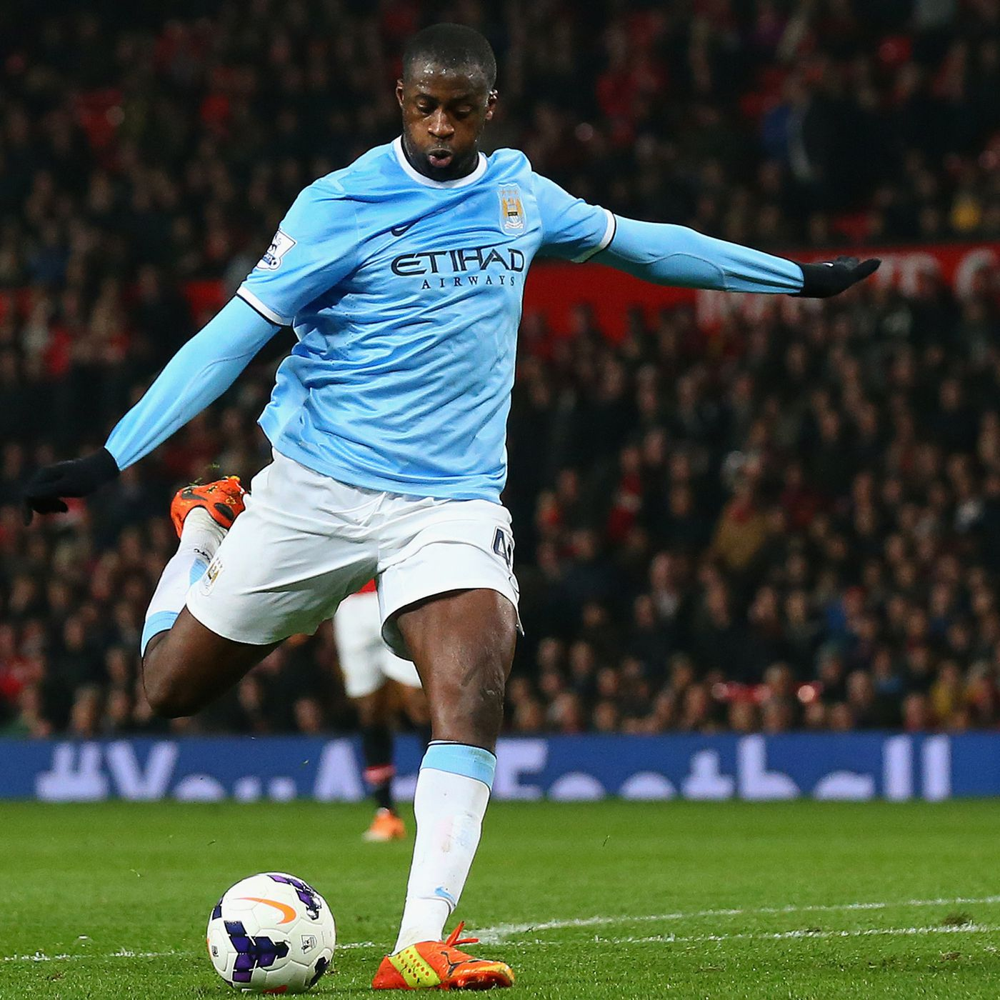
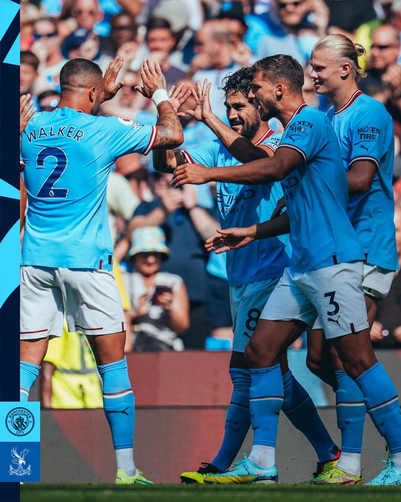

Pep Guardiola Complicates Tactics

One of Peps largest double edge swords. An ability that allows him to see what most are blind to on the pitch, an ability which that allows him and the players to setup up intricate plays. This is what makes Pep Guardiola a genius. But... This can sometimes be a bad thing. The more intricate the play the harder it is to excute, all 11 players need to by in sync during the gruesome 90 minute match. Which can sometimes be too much to ask for. When his plays fall flat and all players aren't in sync they're mistakes are noticeable leading skilled enough teams to take over.
The African Curse
The African Curse, one of the biggest thorns to Manchester City's side for 5+ years.Now this one might be more of a joke but the issue it stemmed from is very serious. Famous footballer player Yaya Toure had come out agaignst his former club Manchester City back in 2016 after he had left the team,stating "He was cruel with me. Do you really think he could've been like that with Iniesta? It got to the point I asked myself if it was because of my colour. I'm not the first, other Barça players asked the question too." These were comments he made about Manager Pep Guardiola. shortly after these comments were released to the press Yaya Toure's Manager had stated that years of miss fortune will be bestowed upong Guardiola for his mistreatment againgst the African players on Manchester City. Thus creating the infamous "African Curse".
Home Grown Talent
Manchester City have been applauded for how they make their teams, rather then buying a roster of already famous and developed player and forming a "Super Team" like other well know teams, they rather get academy players or players from lesser know teams. This way they make sure that players get into the team through determination and sheer knowledge and are then molded to fit the Manchester City playstyle instead of already getting players who a rigged and hard to adapt. This can be a downside though cause players may never really truly blossom or might take years to show their full potential. Jack Grealish is a great example of this.